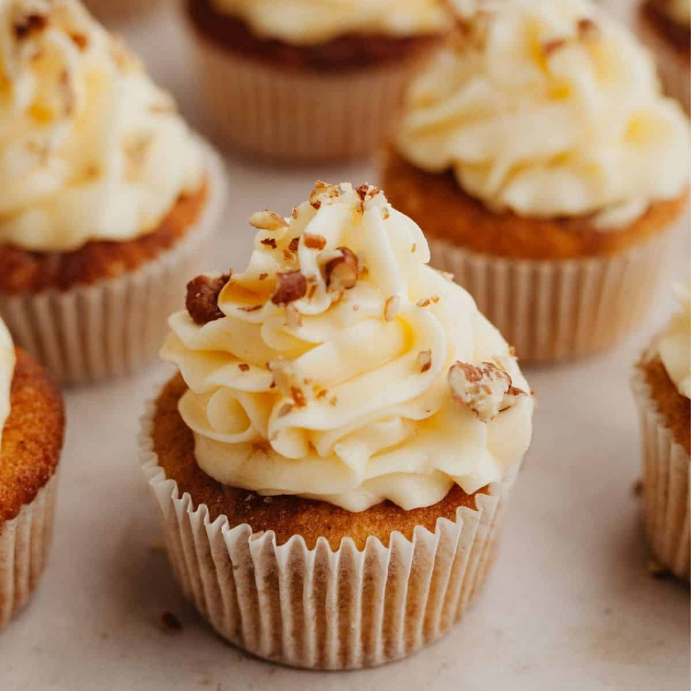

Maple Cupcakes

These moist and fluffy cupcakes are infused with the warm and comforting taste of maple
Maple Cupcakes are a delightful treat that captures the cozy flavors of maple syrup in a handheld dessert.
The combination of the tender cupcake base and the creamy maple frosting creates a harmonious balance of sweetness. Each bite is a delicious blend of rich flavors that will satisfy your sweet tooth and leave you wanting more.
Ingredients:
- 1 ½ cups all-purpose flour
- 1 ½ teaspoons baking powder
- ¼ teaspoon salt
- ½ cup unsalted butter, softened
- ¾ cup granulated sugar
- 2 large eggs
- 1 teaspoon vanilla extract
- ½ cup milk
- ½ cup pure maple syrup
Steps:
- Preheat the oven to 350°F (175°C) and line a cupcake pan with liners.
- In a bowl, whisk together the flour, baking powder, and salt. Set aside.
- In a separate bowl, cream together the softened butter and granulated sugar until light and fluffy.
- Add the eggs one at a time, beating well after each addition. Stir in the vanilla extract.
- Alternate adding the dry ingredients and the milk to the butter mixture, beginning and ending with the dry ingredients.
- Gently fold in the maple syrup until the batter is smooth and well combined.
- Scoop the batter into the prepared cupcake liners, filling each about two-thirds full.
- Bake for 18-20 minutes or until a toothpick inserted into the center of a cupcake comes out clean.
- Allow the cupcakes to cool in the pan for a few minutes, then transfer them to a wire rack to cool completely.
- Once the cupcakes are cooled, frost them with your favorite maple-flavored frosting and enjoy!